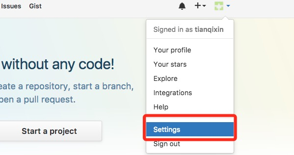
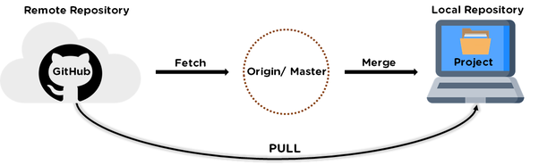
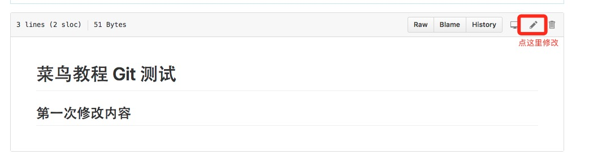
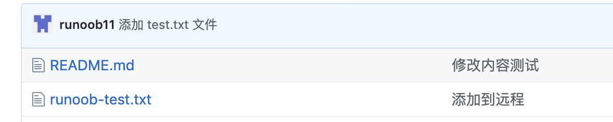

Git repositorio remoto (Github)
Git no tiene un servidor central como SVN.
Hasta ahora, los comandos de Git que usamos se ejecutan localmente. Si quieres compartir tu código a través de Git o colaborar con otros desarrolladores, necesitas colocar los datos en un servidor al que otros desarrolladores puedan conectarse.
Este ejemplo utiliza Github como repositorio remoto. Puedes leer primero nuestroTutorial conciso de Github.

Agregar repositorio remoto
Para agregar un nuevo repositorio remoto, puedes especificar un nombre simple para futuras referencias. El formato del comando es el siguiente:
git remote add [shortname] [url]
Este ejemplo utiliza Github como repositorio remoto. Si no tienes Github, en el sitio web oficialhttps://github.com/puedes registrarte.
Dado que la transferencia entre tu repositorio Git local y el repositorio de GitHub está cifrada mediante SSH, necesitamos configurar la información de verificación:
Usa el siguiente comando para generar la clave SSH (SSH Key):
$ ssh-keygen -t rsa -C "youremail@example.com"
El que aparece despuésyour_email@youremail.comcámbialo al correo que registraste en Github. Después se te pedirá confirmar la ruta y escribir la contraseña; aquí usamos la predeterminada y solo presionamos Enter.
Si tiene éxito, se generará~/debajo de.sshla carpeta, entra y abreid_rsa.pub, copia el contenido dekey。
$ ssh-keygen -t rsa -C "12345678@qq.com" Generating public/private rsa key pair. Enter file in which to save the key (/Users/tianqixin/.ssh/id_rsa): Enter passphrase (empty for no passphrase): # 直接回车 Enter same passphrase again: # 直接回车 Your identification has been saved in /Users/tianqixin/.ssh/id_rsa. Your public key has been saved in /Users/tianqixin/.ssh/id_rsa.pub. The key fingerprint is: SHA256:MDKVidPTDXIQoJwoqUmI4LBAsg5XByBlrOEzkxrwARI 12345678@qq.com The key's randomart image is: +---[RSA 3072]----+ |E*+.+=**oo | |%Oo+oo=o. . | |%**.o.o. | |OO. o o | |+o+ S | |. | | | | | | | +----[SHA256]-----+
Vuelve a Github, entra en Account => Settings (Configuración de la cuenta).

En el lado izquierdo, seleccionaSSH and GPG keys, y luego haz clic enNew SSH keybotón. En title, establece un título; puedes poner lo que quieras. Pega la key que generaste en tu computadora.


Después de agregarla correctamente, la interfaz se muestra de la siguiente manera

Para verificar si tuvo éxito, ingresa el siguiente comando:
$ ssh -T git@github.com The authenticity of host 'github.com (52.74.223.119)' can't be established. RSA key fingerprint is SHA256:nThbg6kXUpJWGl7E1IGOCspRomTxdCARLviKw6E5SY8. Are you sure you want to continue connecting (yes/no/[fingerprint])? yes # 输入 yes Warning: Permanently added 'github.com,52.74.223.119' (RSA) to the list of known hosts. Hi tianqixin! You've successfully authenticated, but GitHub does not provide shell access. # 成功信息
El siguiente comando indica que nos hemos conectado correctamente a Github.
Después de iniciar sesión, haz clic en "New repository" como se muestra a continuación:

Luego, en Repository name, escribe ejemplo-git-test (nombre del repositorio remoto). Mantén los demás ajustes predeterminados y haz clic en el botón "Create repository". Así habrás creado correctamente un nuevo repositorio Git:

Después de crearlo correctamente, se muestra la siguiente información:

La información anterior nos indica que podemos clonar un nuevo repositorio desde este repositorio, y también podemos enviar (push) el contenido del repositorio local al repositorio de GitHub.
Ahora, siguiendo las indicaciones de GitHub, ejecutamos comandos en el repositorio local:
$ mkdir ejemplo-git-test # 创建测试目录 $ cd ejemplo-git-test/ # 进入测试目录 $ echo "# Ejemplo Git 测试" >> README.md # 创建 README.md 文件并写入内容 $ ls # 查看目录下的文件 README $ git init # 初始化 $ git add README.md # 添加文件 $ git commit -m "添加 README.md 文件" # 提交并备注信息 [master (root-commit) 0205aab] 添加 README.md 文件 1 file changed, 1 insertion(+) create mode 100644 README.md # 提交到 Github $ git remote add origin git@github.com:tianqixin/ejemplo-git-test.git $ git push -u origin master
Copia los siguientes comandos desde el lugar donde creaste correctamente el nuevo repositorio en Github, no los que yo proporcioné, porque nuestro nombre de usuario de Github es diferente y el nombre del repositorio también es diferente.
A continuación, volvemos al repositorio creado en Github y podremos ver que los archivos se han subido a Github:

Ver el repositorio remoto actual
Para ver qué repositorios remotos están configurados actualmente, usa el comando:
git remote
Ejemplo
$ git remote origin $ git remote -v origin git@github.com:tianqixin/ejemplo-git-test.git (fetch) origin git@github.com:tianqixin/ejemplo-git-test.git (push)
Al ejecutarlo con el parámetro -v, también puedes ver la URL real de cada alias.
Extraer repositorio remoto
Git tiene dos comandos para extraer actualizaciones del repositorio remoto.
1. Descargar nuevas ramas y datos desde el repositorio remoto:
git fetch
Después de ejecutar este comando, debes ejecutar git merge de la rama remota en tu rama actual.
2. Extraer datos del repositorio remoto e intentar fusionarlos con la rama actual:
git merge
Este comando consiste en ejecutargit fetche inmediatamente después ejecutargit mergela rama remota en cualquiera de tus ramas.

Supón que has configurado un repositorio remoto y deseas extraer los datos actualizados. Puedes ejecutar primerogit fetch [alias]para decirle a Git que obtenga los datos que tiene y que tú no tienes, y luego puedes ejecutargit merge [alias]/[branch]para fusionar en tu rama actual cualquier actualización en el servidor (suponiendo que alguien la haya enviado al servidor).
A continuación, en Github hacemos clic en "README.md" y lo modificamos en línea:

Luego actualizamos los cambios localmente.
$ git fetch origin remote: Counting objects: 3, done. remote: Compressing objects: 100% (2/2), done. remote: Total 3 (delta 0), reused 0 (delta 0), pack-reused 0 Unpacking objects: 100% (3/3), done. From github.com:tianqixin/ejemplo-git-test 0205aab..febd8ed master -> origin/master
La información anterior "0205aab..febd8ed master -> origin/master" indica que la rama master ha sido actualizada. Podemos usar el siguiente comando para sincronizar la actualización con el entorno local:
$ git merge origin/master Updating 0205aab..febd8ed Fast-forward README.md | 1 + 1 file changed, 1 insertion(+)
Ver el contenido del archivo README.md:
$ cat README.md # Ejemplo Git 测试 ## 第一次修改内容
Enviar al repositorio remoto
Comando para enviar tus nuevas ramas y datos a un repositorio remoto:
git push [alias] [branch]
El comando anterior envía tu rama [branch] como la rama [branch] en el repositorio remoto [alias]. Ejemplo:
$ touch ejemplo-test.txt # 添加文件 $ git add ejemplo-test.txt $ git commit -m "添加到远程" master 69e702d] 添加到远程 1 file changed, 0 insertions(+), 0 deletions(-) create mode 100644 ejemplo-test.txt $ git push origin master # 推送到 Github
Volvamos a nuestro repositorio de Github; podemos ver que los archivos ya se han subido:

Eliminar repositorio remoto
Para eliminar un repositorio remoto, puedes usar el comando:
git remote rm [别名]
Ejemplo
$ git remote -v origin git@github.com:tianqixin/ejemplo-git-test.git (fetch) origin git@github.com:tianqixin/ejemplo-git-test.git (push) # 添加仓库 origin2 $ git remote add origin2 git@github.com:tianqixin/ejemplo-git-test.git $ git remote -v origin git@github.com:tianqixin/ejemplo-git-test.git (fetch) origin git@github.com:tianqixin/ejemplo-git-test.git (push) origin2 git@github.com:tianqixin/ejemplo-git-test.git (fetch) origin2 git@github.com:tianqixin/ejemplo-git-test.git (push) # 删除仓库 origin2 $ git remote rm origin2 $ git remote -v origin git@github.com:tianqixin/ejemplo-git-test.git (fetch) origin git@github.com:tianqixin/ejemplo-git-test.git (push)<div style="display:none;"> <hr> <h2 id="git-coding">Usar el repositorio CODING</h2> <blockquote><p>Para los desarrolladores, GitHub ya no es desconocido, y es muy conveniente alojar el código en GitHub durante el desarrollo habitual. Sin embargo, los usuarios domésticos suelen encontrar un problema: la velocidad de acceso a GitHub es demasiado lenta. Al clonar código en los hosts de Alibaba Cloud y Tencent Cloud, si el ancho de banda del host no es suficiente, clonar código es una auténtica tortuga. A menudo también ocurren pérdidas de paquetes, desconexiones, etc. Ante esta situación, si quieres experimentar un servicio Git ultrarrápido, prueba la <a href='https://studio.dev.tencent.com/' target="_blank" rel="noopener noreferrer">Plataforma para desarrolladores de Tencent Cloud</a>. En comparación con GitHub, CODING no solo ofrece repositorios Git gratuitos, sino que también nos ofrece repositorios privados gratuitos (la membresía gratuita normal proporciona 10 proyectos privados y 512M de capacidad de repositorio Git). Además, CODING también nos ofrece gratuitamente funciones como gestión de proyectos, gestión de tareas, gestión de equipos y gestión de archivos, siendo muy potente.</p></blockquote> <p>A continuación, voy a intentar crear un proyecto CODING y migrar el código de GitHub a CODING. Normalmente, se divide en tres pasos:</p> <ul><li>1. Crear un proyecto CODING</li><li>2. Hacer pull del código de GitHub al local</li><li>3. Asociar el repositorio CODING local y hacer push del código a CODING</li></ul><h3>Crear un proyecto CODING:</h3> <p>Inicia sesión en la <a href='https://studio.dev.tencent.com/' target="_blank" rel="noopener noreferrer">Plataforma para desarrolladores de Tencent Cloud</a> y registra una cuenta, luego crea un proyecto en la página de gestión de proyectos. No entraré en detalles en este paso; simplemente completa el nombre y la descripción del proyecto según tus necesidades y elige el tipo de License. Sobre la elección de la licencia, puedes consultar este artículo: <a target="_blank" href='http://www.ruanyifeng.com/blog/2011/05/how_to_choose_free_software_licenses.html' rel="noopener noreferrer">¿Cómo elegir una licencia de código abierto?</a>. Una vez creado el proyecto, en la pestaña de código del menú lateral derecho puedes realizar las operaciones de gestión relacionadas con el código.</p><p> <img src='/images/ad/86879978.jpg.html' alt='' /></p><p> <img src='/images/ad/84518452.jpg.html' alt='' /></p> <h3>Hacer pull del código de GitHub al local:</h3> <p>Inicia sesión en GitHub, selecciona el repositorio que deseas importar y copia la dirección del repositorio. Ejecuta el comando localmente para descargar el código del repositorio de GitHub:</p><p> <img src='/images/ad/10346579.jpg.html' alt='' /></p> <pre>sudo git clone</pre> <h3>Asociar el repositorio CODING local y hacer push del código a CODING:</h3><p>Primero ejecutamos el comando: <code>git remote -v</code></p><p> <img src='/images/ad/43989293.jpg.html' alt='' /></p><p> Como puedes ver, el git actual ya está asociado a un repositorio remoto.</p><p> Por lo tanto, a continuación ejecutamos los siguientes comandos para asociar el repositorio remoto de CODING (¡la dirección del repositorio que aparece al final debe reemplazarse por la dirección de tu proyecto CODING!). La función del primer comando es eliminar la asociación de repositorio existente; los dos comandos siguientes asocian el repositorio a la dirección de CODING y hacen push del código a la rama master.</p><pre> sudo git remote rm origin sudo git remote add origin https://git.coding.net/xxx/xxx.git sudo git push -u origin master</pre> <p>Después, volvemos a entrar en la página de gestión de código del proyecto CODING y podremos ver el código que acabamos de subir con push. En este punto, el proyecto de GitHub se ha migrado por completo a la plataforma CODING.</p><p> <img src='/images/ad/18357223.jpg.html' alt='' /></p> <h3>Push/Pull sin contraseña en el repositorio CODING</h4><p>Después de migrar el código a CODING, descubrimos que cada vez que hacemos push/pull del código se nos pide introducir el nombre de usuario y la contraseña. Esto se debe a que nuestro proyecto aún no ha añadido una SSH Key, y solo puede autenticarse mediante nombre de usuario/contraseña. CODING nos proporciona el método de verificación mediante clave pública. Entra en la gestión del proyecto, haz clic en el botón "Despliegue de clave pública" en la pestaña izquierda y luego haz clic en "Nuevo despliegue de clave pública" en la parte derecha.</p><p> <img src='/images/ad/62119861.jpg.html' alt='' /></p><p>Pegamos el contenido de la clave pública local en la posición correspondiente y le damos un nombre a la clave pública (para ver/generar la clave pública local, puedes consultar esta publicación: <a href='/w3cnote/view-ssh-public-key.html' target="_blank" rel="noopener noreferrer">Ver la clave pública ssh local, generar clave pública</a>). Al marcar "Otorgar permiso de push", se puede conceder a esta máquina el permiso para hacer push del código.</p><p> <img src='/images/ad/64498917.jpg.html' alt='' /></p><p>Después de guardar la configuración, lo intentamos de nuevo. En este momento, hacer push/pull del código ya no requiere verificar el nombre de usuario y la contraseña. Con esto, nuestro código está completamente alojado en la plataforma CODING. ¡Disfruta de su comodidad y velocidad!</p><p>Si tienes dudas, consulta la <a href='https://dev.tencent.com/help/doc/cloud-studio' target="_blank" rel="noopener noreferrer">documentación de ayuda</a>.</p> <p>Ahora CODING está organizando una [Competencia de selección de mi complemento favorito de Cloud Studio] basada en el espacio de trabajo de Cloud Studio. Entra en el sitio web oficial del evento: <a href="https://studio.qcloud.coding.net/campaign/favorite-plugins/index" rel="noopener noreferrer" target="_blank">https://studio.qcloud.coding.net/campaign/favorite-plugins/index</a> para obtener más información sobre el evento.</p> </div> Otras extensiones